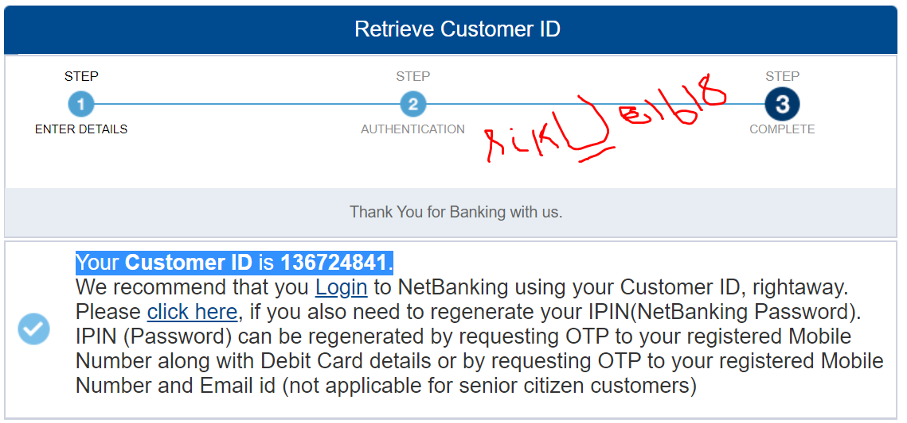

<!-- Toolbar -->
<!--<div class="toolbar" role="banner" >
  
  <span>Welcome to Debasmit Blog &nbsp;&nbsp;</span>
</div>-->
<body>
  <div id="wrapper">
    <div id="header">
      <mat-toolbar color="primary" role="banner">
        <mat-toolbar-row>
          <mat-card>
            <button mat-button [matMenuTriggerFor]="rootMenu">
              <mat-icon>mood</mat-icon>
              
              <!---->

            </button>
            <mat-menu #rootMenu="matMenu">
              <button mat-menu-item [matMenuTriggerFor]="subMenu1">Angular</button>
              <button mat-menu-item [matMenuTriggerFor]="subMenu2">React</button>
            </mat-menu>

            <mat-menu #subMenu1="matMenu">
              <button mat-menu-item>Angular 5</button>
              <button mat-menu-item>Angular 6</button>
            </mat-menu>

            <mat-menu #subMenu2="matMenu">
              <button mat-menu-item>React 16.0</button>
              <button mat-menu-item>React 16.1</button>
            </mat-menu>

          </mat-card>
          <button mat-icon-button (click)="sidenav.toggle()" fxShow="true" fxHide.gt-sm>
            <mat-icon>menu</mat-icon>
          </button>
          <!--<button mat-icon-button>
          <mat-icon (click)="sidenav.toggle()">menu</mat-icon>

        </button>-->
          <span><span class="title">Welcome to Debasmit Blog &nbsp;&nbsp;</span></span>
          <!--<span class="menu-spacer"></span>-->
          <div fxShow="true" fxHide.lt-md style="float: left; display: inline-block;">
            <!-- The following menu items will be hidden on both SM and XS screen sizes -->
            <a mat-button [routerLink]="'/home'"> Home </a>
            <a mat-button [routerLink]="'/about'"> About </a>
            <a mat-button [routerLink]="'/term'"> Term </a>
          </div>

          <span class="toolbar-filler"></span>

          <!--<span>{{ time | date: 'hh:mm:ss a' }}</span>-->
          <button mat-icon-button (click)="sidenav.toggle()" class="mat-icon-button sidenav-toggle-button" [hidden]="!sidenav.opened">
            <mat-icon aria-label="Menu" class="material-icons">close</mat-icon>
          </button>
          <!--<mat-icon>notifications_off</mat-icon>-->
          <mat-icon>poll</mat-icon>
          <mat-icon>person</mat-icon><span style="font-style:normal;font-size:small;">{{currentUser?.firstName}}</span>
          <!--<a class="nav-item nav-link" (click)="logout()">Logout</a>-->
          <button id="button-logout" mat-button (click)="logout()">Log Out</button>
          <!--<flag-icon country="fr"></flag-icon>-->
          <span class="flag-icon flag-icon-in flag-icon-squared"></span>


        </mat-toolbar-row>
      </mat-toolbar>
    </div>
    <mat-sidenav-container>
      <mat-sidenav #sidenav mode="side" opened role="navigation" style="width: 21.69vh;" color="primary">
        <a mat-list-item class="sidenav-link" [routerLink]="['/home']">
          <div style="display: inline-flex;    vertical-align: middle;">
            <mat-icon mat-list-icon>account_balance</mat-icon>
            <span class="title" mat-line>Home</span>
          </div>


        </a>
        <a mat-list-item class="sidenav-link" [routerLink]="['/about']">
          <div style="display: inline-flex;    vertical-align: middle;">
            <mat-icon mat-list-icon>android</mat-icon>
            <span class="title" mat-line>About</span>
            <span mat-line class="secondary"></span>
          </div>
        </a>
        <a mat-list-item class="sidenav-link" [routerLink]="['/fullscreen1']" (click)="sidenav.toggle()">
          <div style="display: inline-flex;    vertical-align: middle;">
            <mat-icon mat-list-icon><i class="material-icons">panorama_wide_angle</i></mat-icon>
            <span class="title" mat-line>fullscreen </span>
          </div>
        </a>
      </mat-sidenav>
      <mat-sidenav-content><router-outlet></router-outlet></mat-sidenav-content>
    </mat-sidenav-container>

    
    <div id="footer">
      <label style="margin-bottom:10px;">This stays at the bottom of the page.</label>
      <mat-icon style="vertical-align:middle">thumb_up_alt</mat-icon>
      <mat-icon class="example-icon">favorite</mat-icon>


    </div>
  </div>
</body>
  


